Chapter 3 · Part 1 — Where Is Here?
Jack looked out the window.
He looked down at the picture in the book.

He looked back out the window.
The world outside and the world in the picture—they were exactly the same.

The Pteranodon was through the sky. The ground was covered with ferns and tall grass. There was a winding stream. A sloping hill. And volcanoes in the distance.
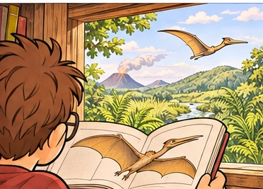
“Wh-where are we?” stammered Jack.

The Pteranodon glided down to the base of their tree. The creature coasted to a stop. And stood very still.
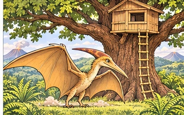
“What happened to us?” said Annie. She looked at Jack. He looked at her.

“I don’t know,” said Jack. “I was looking at the picture in the book—”
“And you said, ‘Wow, I wish I could see a Pteranodon for real,’ ” said Annie.
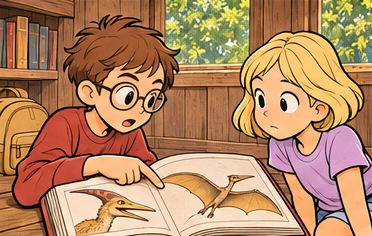
“Yeah. And then we saw one. In the Frog Creek woods,” said Jack.
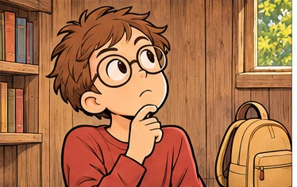
“Yeah. And then the wind got loud. And the tree house started spinning,” said Annie.

“And we landed here,” said Jack.
“And we landed here,” said Annie.
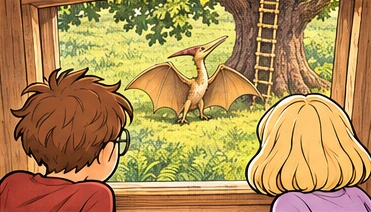
“So that means … ” said Jack.
“So that means … what?” said Annie.

“Nothing,” said Jack. He shook his head. “None of this can be real.”

Annie looked out the window again. “But he’s real,” she said. “He’s very real.”
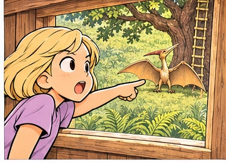
Jack looked out the window with her. The Pteranodon was standing at the base of the oak tree. Like a guard. His giant wings were spread out on either side of him.
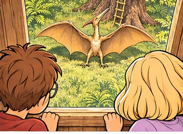
“Hi!” Annie shouted.

“Shush!” said Jack. “We’re not supposed to be here.”

“But where is here?” said Annie.
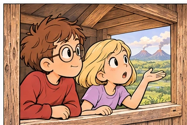
“I don’t know,” said Jack.
“Hi!” Annie called again to the creature.

The Pteranodon looked up at them.
“Where is here?” Annie called down.
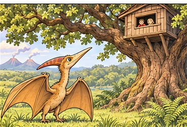
“You’re nuts. He can’t talk,” said Jack. “But maybe the book can tell us.”

Jack looked down at the book. He read the words under the picture:
This flying reptile lived in the Cretaceous period. It 65 million years ago.

No. Impossible. They couldn’t have landed in a time 65 million years ago.
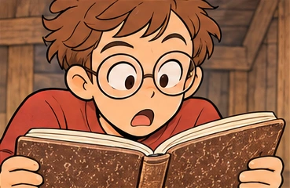
“Jack,” said Annie. “He’s nice.”
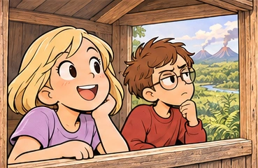
“Nice?”
“Yeah, I can tell. Let’s go down and talk to him.”
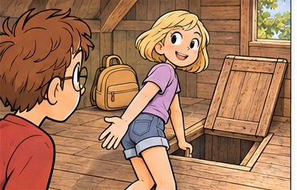
“Talk to him?”
Annie started down the rope ladder.
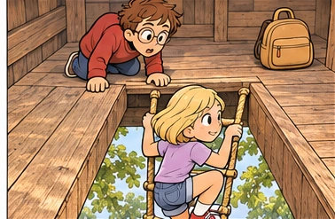
“Hey!” shouted Jack.

But Annie kept going.
“Are you crazy?” Jack called.

Annie dropped to the ground. She stepped up to the creature.
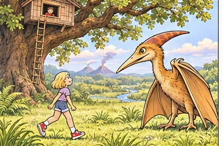